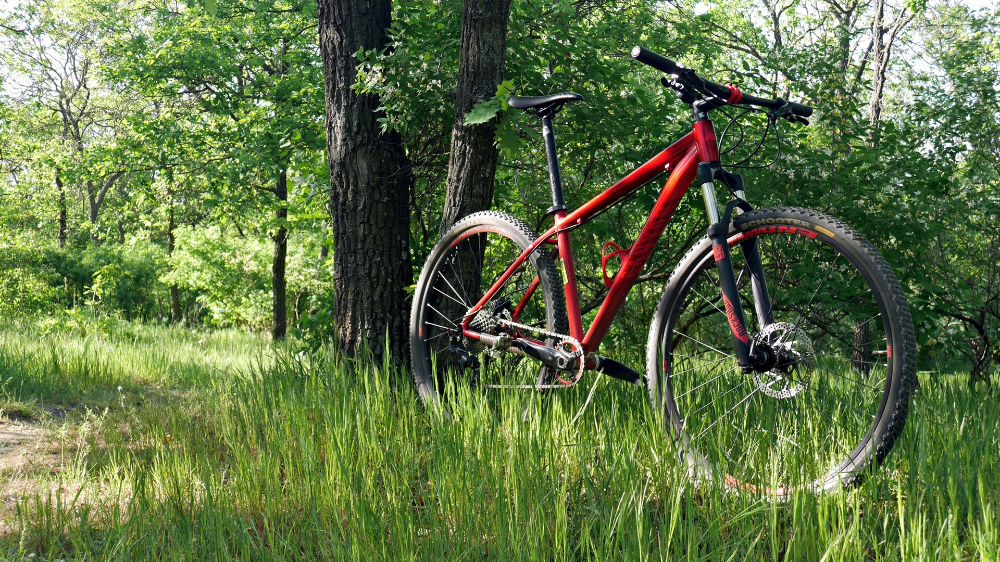

Közlekedési alternatívák
A mindennapokban akár munkába, vagy iskolába el kell jutni valahogy.
Aki megteheti az autóval megy, rengetegen tömegközlekedéssel, de akik tudnak
sétálva vagy kerékpárral, esetleg rollerrel jutnak el A-ból B-be.
Az utóbbi hárommal nincs is baj, de sajnos nem mindenki teheti meg,
hogy ezeket a közlekedési módokat használja.
Az autókkal van a legnagyobb probléma,
hiszen ezeket általában egy személy használja, hosszabb távokra, ami még több széndioxid
kibocsátást, ezáltal szennyezést jelent.
Erre megoldást nyújthat a tömegközlekedés, ami lehet hogy továbbra is szennyezi a
környezetet,
de sokkal kevésbé, mintha az utasok mind autóval tennék meg ugyanazt az utat.
Másik megoldás lehet a hibrid vagy teljesen elektromos autók használata.
Egy elektromos autó nem bocsát ki semmilyen káros anyagot, sok esetben nagyobb távot is bír,
mint fosszilis üzemanyaggal üzemelő társai. Emellett érdemes kiemelni,
hogy az elektromos autóknak nagyon minimális a zajkibocsátása, ami a zajszennyezés
csökkentése szempontjából nagyon jó.
A hibrid autók a fosszilis üzemanyaggal üzemelő autók és az elektromos autók ötvözetei,
és ezek bár szennyezik a környezetet, messze nem annyira mint a csak fosszilis üzemanyaggal
üzemelő autók.
Messze a leghíresebb elektromos autó gyártó a Tesla, amely kizárólag elektromos autókat
gyárt, de az elektromos autóknak a hátránya,
hogy sajnos elég drágák.
Azt ajánljuk, hogy használj elektromos, de legalább hibrid autót ha teheted!
Előbb lettek említve azok az emberek is akik a tömegközlekedés és kocsikázás helyett inkább
a kerékpárt, rollert, vagy sétát választják.
A kerékpár nagyon jó választás lehet, főleg ha nagyobb távot kell megtenni,
de nem annyira, hogy feltétlen autóba kelljen ülni hozzá. Nem szennyezi a környezetet
semmilyen formában, és még egészséges is!
A roller is nagyon jó választás lehet, bár ezt a közlekedési módot inkább a diákok, vagy a
fiatalok használják nagytöbbségben.
Egy átlagos roller bár nem nagyon nagy távokra való, ellenben az elektromos rollerekkel elég
nagy távot kényelmesen és viszonylag gyorsan meg lehet tenni.
Elektromos rollereket lehet venni is, de általában a nagyobb városokban mindenhol vannak
bérelhető, ún. Lime rollerek, amelyek gyorsak, kényelmesek,
és applikáción keresztül meg lehet keresni hol van a legközelebb egy roller.
A Lime feloldási díjat, és aztán percdíjat számol fel, de nem kell aggódni, igen csekély
áron elérhető a szolgáltatás.
Ha netán adódna a szituáció, hogy valahová autóval kéne menünk de amúgy mi nem rendelkezünk vele, akkor jöhet szóba a carsharing.
A carsharing az olcsó és környezetkímélőbb utazást próbálja elérhetővé tenni mindeki számára.
Hogy mitől is lesz környezetkímélő? Igen egyszerű. Mert elektromosak, illetve mert egy autót sok ember használhat.
Ez a szolgáltatás idősazkos megoldást jelenthet bárkinek, ha autóba kéne ülnie de amúgy valamilyen okból nem tehetné.
Az előbbiek mellett még mindig akadnak alternatívák melyeket nem említetünk, de erről a listáról még egy elemet kihúzhatunk: mégpedig az elektromos motort.
Azt elektromos autók mellett természetesen vannak elektromos motorok is. Összeségében ugyanazok a tulajdonságok jellemzik. Mégpedig:
rövidtávra lettek kitalálva, olcsóbb a fentartása, csöndes és színtén hatékony a városi közlekedésben.
Nem utolsó sorban a dugók sem jelentenek akadályt. Reméljük segíthettünk neked az ötleteinkkel, hogy te is könnyebben tehess egy szebb,
egészségesebb jövőért!